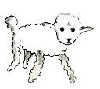

Сказка "Маленький принц"
Оглавление
Глава 2
Так я жил в одиночестве, и не с кем было мне поговорить по душам. И вот шесть лет тому назад пришлось мне сделать вынужденную посадку в Сахаре. Что-то сломалось в моторе моего самолета. Со мной не было ни механика, ни пассажиров, и я решил, что попробую сам все починить, хоть это и очень трудно. Я должен был исправить мотор или погибнуть. Воды у меня едва хватило бы на неделю.Итак, в первый вечер я уснул на песке в пустыне, где на тысячи миль вокруг не было никакого жилья. Человек, потерпевший кораблекрушение и затерянный на плоту посреди океана, — и тот был бы не так одинок. Вообразите же мое удивление, когда на рассвете меня разбудил чей-то тоненький голосок. Он сказал: — Пожалуйста… нарисуй мне барашка!— А?..— Нарисуй мне барашка… Я вскочил, точно надо мною грянул гром. Протер глаза. Стал осматриваться. И увидел забавного маленького человечка, который серьезно меня разглядывал. Вот самый лучший его портрет, какой мне после удалось нарисовать. Но на моем рисунке он, конечно, далеко не так хорош, как был на самом деле. Это не моя вина. Когда мне было шесть лет, взрослые убедили меня, что художник из меня не выйдет, и я ничего не научился рисовать, кроме удавов — снаружи и изнутри.
Рисунок 4

Итак, я во все глаза смотрел на это необычайное явление. Не забудьте, я находился за тысячи миль от
человеческого жилья. А между тем ничуть не похоже было, чтобы этот малыш заблудился, или до смерти устал и
напуган, или умирает от голода и жажды. По его виду никак нельзя было сказать, что это ребенок, потерявшийся
в необитаемой пустыне, вдалеке от всякого жилья. Наконец ко мне вернулся дар речи, и я спросил:
— Но… что ты здесь делаешь? И он опять попросил тихо и очень
серьезно: — Пожалуйста… нарисуй барашка… Все это
было так таинственно и непостижимо, что я не посмел отказаться. Как ни нелепо это было здесь, в пустыне, на
волосок от смерти, я все-таки достал из кармана лист бумаги и вечное перо. Но тут же вспомнил, что учился-то
я больше географии, истории, арифметике и правописанию, и сказал малышу (немножко даже сердито сказал), что
не умею рисовать. Он ответил:— Все равно. Нарисуй барашка.Так как я никогда в жизни не рисовал баранов, я
повторил для него одну из двух старых картинок, которые я только и умею рисовать — удава снаружи. И очень
изумился, когда малыш воскликнул:— Нет, нет! Мне не надо слона в удаве! Удав слишком опасен, а слон слишком
большой. У меня дома все очень маленькое. Мне нужен барашек. Нарисуй барашка.И я нарисовал.

Он внимательно посмотрел на мой рисунок и сказал:
— Нет, этот барашек уже совсем хилый. Нарисуй другого.Я нарисовал.

Мой новый друг мягко, снисходительно улыбнулся.
— Ты же сам видишь, — сказал он, — это не барашек. Это большой баран. У него рога…
Я опять нарисовал
по-другому. Но он и от этого рисунка отказался:

— Этот слишком старый. Мне нужен такой барашек, чтобы жил долго.
Тут я потерял терпение — ведь мне надо было поскорей разобрать мотор — и нацарапал ящик.

И сказал малышу:
— Вот тебе ящик. А в нем сидит такой барашек, какого тебе хочется. Но
как же я удивился,
когда мой строгий судья вдруг просиял: — Вот это хорошо! Как ты думаешь, много этому барашку
надо травы? — А что?— Ведь у меня дома всего очень мало…— Ему хватит. Я тебе даю совсем
маленького барашка.— Не такой уж он маленький… — сказал он, наклонив голову и разглядывая
рисунок. — Смотри-ка! Он уснул… Так я познакомился с Маленьким
принцем.